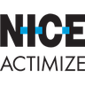

Trust & Safety Policy Watcher: Building Competitive Intelligence That Never Sleeps
A product case study of transforming manual competitive intelligence into an automated AI-powered system monitoring 25+ competitor policies.
Read the case studyHi, I'm Lyor.
Lyor's innovative thinking and problem-solving skills were key to our success.
Product leader and founder of BuiltIt.dev and DebtCat. 8+ years shipping in fintech, e-commerce, and AI, from zero to one and at scale.
With a journey spanning from culinary entrepreneurship to fintech innovation, I specialize in scaling startups and transforming ideas from zero to one. My expertise lies in AI/ML product management, UX design, and data-driven decision-making.
When I'm not building products, you can find me baking bread, scuba diving, or exploring new cultures with my dog by my side. I'm also an avid gardener, currently growing blackberries, beefsteak tomatoes, Hungarian wax peppers, sage, catnip, and more.
Launched BuiltIt.dev to empower founders and businesses by rapidly transforming ideas into market-ready digital products. We specialize in:
Currently establishing our initial client partnerships and refining our core sprint methodologies. BuiltIt.dev combines strategic product thinking with expert Next.js development to deliver tangible results, fast.
Leveraging 6+ years as a SaaS Product Manager in fintech and e-commerce, I founded BuiltIt.dev to directly address the gap between innovative ideas and effective technical execution. My mission is to provide a clear, efficient path for clients to validate their concepts and integrate cutting-edge AI, moving from vision to value with speed and strategic precision.
As Product Lead at Hopper Technology Solutions (HTS), I led the zero-to-one delivery of a corporate travel portal for a major U.S. financial institution, adapting existing booking technology for a reusable commerce platform. I partnered closely with client stakeholders and a dedicated engineering squad, drove conversion optimizations across hotel discovery and loyalty merchandising, and established the end-to-end product tracking and analytics architecture for enterprise reporting.
Senior Product Manager for Trust and Safety at eBay Live, owning critical areas including chat moderation, unpaid-item fraud detection, privacy compliance, and buyer-seller protections. In the first month, I removed approximately 30% of critical blockers and established comprehensive KPIs and dashboards to reduce harmful content, shorten moderation latency, and cut unpaid item incidents.
Leading Trust & Safety product initiatives for eBay's live streaming platform, focusing on creating safe marketplace experiences while maintaining platform growth. My role combines strategic product management with hands-on execution to build robust safety systems that protect millions of users while enabling seamless commerce.
Joined EcoCart as a consultant to enhance their product offerings. I planned a new post-purchase experience for customers, including package protection and other services. From inception, I collaborated closely with our designer, head of product, engineering teams, and leadership to bring this new product to life.
After gaining experience in the debt collection industry, I recognized that consumers in debt are underserved. Leveraging my knowledge and technical expertise, I founded DebtCat to provide free resources and tools to help consumers improve their financial situation. Our goal is to establish DebtCat as a trusted authority in debt assistance, collaborating with the CFPB and other consumer rights organizations.
At TrueML, I spearheaded product development for their direct-to-consumer platform while establishing scalable operational processes. I implemented robust product support systems and collaborated closely with management, engineering, and various departments to build an efficient organizational structure. As Lead Product Manager in the recovery division, I revamped the mobile experience, significantly enhancing user engagement. I successfully led the rapid implementation of multi-factor authentication across all accounts under a tight deadline and introduced a guest checkout feature, boosting top-line revenue by 15% and improving user experience.
I partnered with the founder to launch AssemblyDrop, aiming to be the "Instacart for the construction industry." Leading the product from concept to launch, I developed the initial roadmap, executed go-to-market strategies, and conducted comprehensive user research. This in-depth research enabled us to pivot effectively, creating an automated ordering solution tailored for the construction sector. Our innovative approach led to AssemblyDrop's acquisition by Harbor Ready Mix, underscoring the product's value and impact in the industry.
At ProgForce, I collaborated closely with the founder and engineering team to develop an innovative hierarchical task management system for large enterprises. Leading the product from concept to prototype in under a year, I also hired a UX designer and crafted compelling pitch decks. Our testing projected a 30% increase in response rates, a 25% reduction in response times, and a 20% boost in completion rates for travel forecasts across all organizational levels. By integrating gamification, automation, and enhanced transparency, we addressed critical organizational challenges. Although the project was paused due to COVID-19, the experience reinforced my ability to design impactful solutions and adapt to unforeseen challenges.
After relocating to the Netherlands to support my wife's master's in finance, I joined ICL Group as a Global Analyst. Partnering with various departments, especially Global Procurement, I implemented automation processes using Office 365 and Teams, streamlining workflows across the organization. This led to a 20% improvement in approval rates for major purchases and a 25% increase in departmental efficiency. I also led internal projects by translating business requirements into product specifications, managing small teams, and coordinating with stakeholders to develop effective technical solutions.

NICE Actimize Business AnalystDuring my final year of engineering studies, I joined NICE Actimize as a Business Analyst. I focused on driving key metrics and increasing client adoption of our portal. Recognized for my contributions, I was offered a full-time position to further expand and enhance the portal's functionality. I continued to deliver impactful results until relocating to the Netherlands with my spouse.
Joining Oren’s Hummus during the launch of their first Palo Alto branch, I progressed from Shift Manager to General Manager, honing my leadership and operational skills. I pioneered the creation of a catering service from scratch, developing recipe books, building the website, leading marketing efforts, and establishing streamlined procedures. This catering division became a significant revenue driver, contributing about 40% of total revenue with 25% lower expenses due to the absence of dine-in operations. We successfully catered to local Palo Alto companies with fresh, healthy Mediterranean cuisine. I left Oren's Hummus to move to Israel and pursue engineering studies.
A product case study of transforming manual competitive intelligence into an automated AI-powered system monitoring 25+ competitor policies.
Read the case study
A product case study of a tool to empower consumers with insider knowledge and actionable steps to challenge unfair collection practices.
Read the case studyAn AI-based fintech platform empowering consumers to understand their rights and eliminate debt. Offering educational resources, dispute services, and a ChatGPT-powered chatbot.
Monitor trust and safety policy changes across major live streaming platforms and get instant alerts. Automated competitive intelligence system that tracks 25+ competitor policies with AI-powered analysis.
A product solution addressing post-order friction by providing real-time delivery transparency when customers need it most, reducing support contacts and preserving trust.
An AI-powered pet adoption platform that matched people with compatible shelter animals to reduce return rates and create more successful forever homes. Shut down after Petfinder deprecated the public API that powered its shelter data.
Lyor is one of those rare product managers who truly cares about the product, the users, the client, and the people around him.
I had the pleasure of working with Lyor as he led and built a product and platform from the ground up, navigating ambiguity, shifting priorities, and the complexity of preparing for launch with a new team and a major partner.
In an environment where we constantly had to balance company priorities, client expectations, and launch requirements, Lyor brought tremendous dedication, resourcefulness, and a willingness to tackle whatever challenge came his way. He was never afraid to roll up his sleeves, whether that meant leading across teams, solving unexpected problems, or building a Claude Code prototype that the partner went on to use in client demos.
What stands out most to me is his ownership and complete lack of ego. He does whatever it takes to move things forward, always with the success of the product and the people around him in mind.
Lyor would be a tremendous asset to any team!
I worked closely with Lyor when he joined as Product Manager for our corporate travel team at Hopper, and he made a real impact.
Lyor quickly got a deep understanding of the corporate travel landscape. He did detailed research into the platforms on the market so we could make sure what we built for our partner was the best it could be. He then used that insight to help take our product to the next level, scaling it to meet the needs of a large enterprise partner.
In our first month, we built the roadmap together and shaped it into a plan a new team could deliver. As an engineering leader, it's super important to me that product folks I work with understand trade-offs and prioritize accordingly. Lyor was a great collaborator and we were launch-ready with the scaled platform in no time.
Lyor was always on top of everything, and he was excellent with our partner: he built a strong, trusted relationship and made sure they felt heard throughout. He worked really well cross-functionally and was genuinely keen to learn, taking feedback on board and growing quickly in the role.
Lyor is a dedicated, collaborative PM and I’d gladly work with him again.
Lyor came in to eBay and immediately took ownership of the trust and safety product roadmap for eBay Live. He ramped up quickly and found where he could make an impact by being intellectually curious about the product and the challenges we faced. While Lyor was only here for a short time, he managed to earn stakeholder trust from both business and engineering and brought a highly visible automated chat moderation solution to market. I'm sad to see him move on to new challenges but I'm excited to see what he builds next.
Lyor played a pivotal role in our product evolution at EcoCart. His enthusiasm and excitement for every challenge were infectious, driving the team to new heights. Lyor's innovative thinking and problem-solving skills were key to our success. His positive attitude and dedication made him an invaluable asset. I highly recommend Lyor for any role that demands creativity, enthusiasm, and a relentless drive for excellence.
I had the pleasure of working with Lyor for almost 4 years building sophisticated, compliant products and software in the highly regulated financial industry space. Lyor's strong cross-team accountability, collaboration, attention to detail and dedication to compliance made him an asset, not only to his legal and compliance peers but to the engineers and company as a whole. His creative and intelligent solutions always included designing positive and seamless user experiences while achieving the stated business and legal objectives. Lyor is also fun to be around whether meeting virtually or in person. Consider this the highest of recommendations!!
Lyor drives impact as a product manager by considering all possible angles of feature work and how it may affect the end user and stakeholders. He consistently brought a positive and focused energy to the team we worked with that was invaluable. I recommend Lyor for any team that wants a thoughtful, methodical, and flexible leader on their team.
I worked with Lyor for nearly 4 years as a Product Design partner and his collaborative approach always showed he understood the importance of design in product development. He actively sought input from our team to ensure that UX considerations were integrated from the earliest stages of product conception. Lyor has shown outstanding leadership in advocating for user-centered design throughout the organization. He was instrumental in fostering a culture where consumer feedback is not just heard but is a key driver in decision-making processes and he was a valued member of the Voice of the Consumer committee. Lyor would be an asset to any team looking to enhance their product's usability. His dedication to crafting exceptional user experiences is evident in his approach to Product Management, and I am confident he will bring the same level of passion and expertise to whatever company he joins.
Lyor is a great person to work with, professional and pleasant in one package! Have great UX creativity and business views, as well as devotion to all details, even the smallest that others might forget.
I had the pleasure of working with Lyor, who helped turn Chubby'z Instagram success into a thriving online business. He built our Shopify website from scratch, managed the entire project, and worked closely with our designer to create a brand we're proud of. Thanks to Lyor's hard work and dedication, we're now able to support Chubby's needs. I highly recommend Lyor for his expertise and commitment.
I'm always open to discussing new projects, creative ideas, or opportunities to be part of your visions. Send a note here or reach out on any of these.